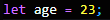

A value is either an object and an primitive
primitive:
Number: Floating point numbers: Used for decimals and integers: 
String: Sequence of characters: Used for text: 
Boolean: Logic type can only be true or falce: Used for taking decisions: 
Undefined: Value taken by the veriable is not yet defined ('empty value'): 
Null: Also means 'empty value'.
Symbol (ES2015): Value that is unique and cannot be changed.
BigInt (ES2020): Larger integers than the Numbers type can hold.


operator: typeof:


dynamic typing:


undefined: